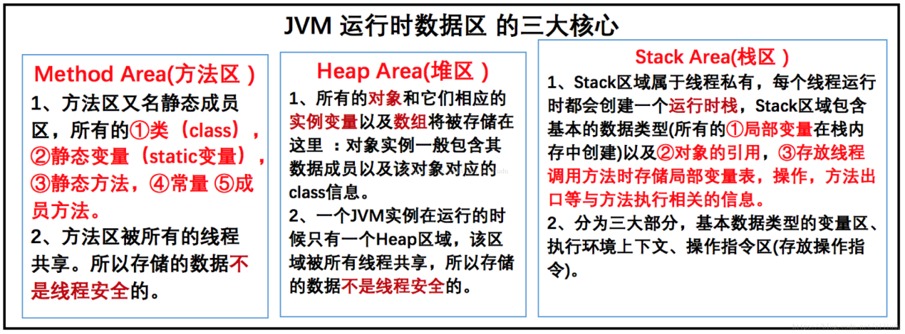
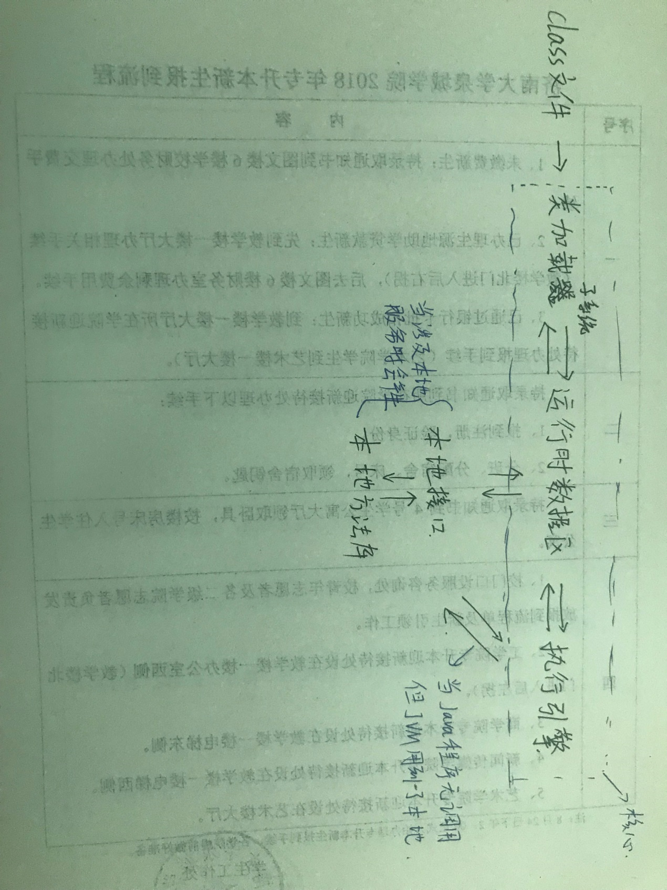
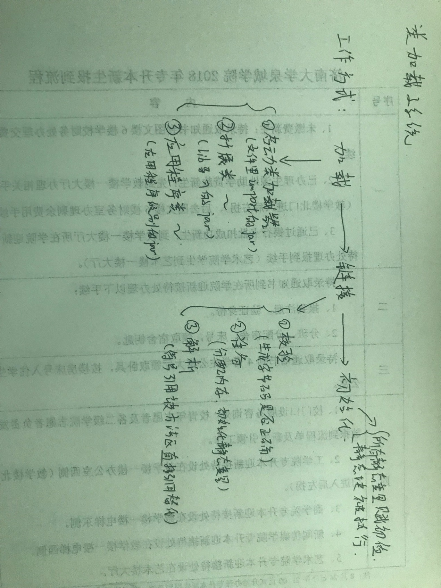

jvm基础讲解
大家好，我是mythSun。
很高兴能在这里和大家分享，jvm基础讲解。
话不多说，直接开始。
所以涉及到相关的信息，怕误导他人，一大部分是摘录的。
那我这篇文章的意义何在，jvm这东西自学有些费劲，
从我这个看起，更能接受，因为我也是从零学起，
而且最后加入了更容易理解的部分，若有不当之处，请联系我加以斧正。
JVM被分为三个主要的子系统
（1）类加载器子系统（2）运行时数据区（3）执行引擎
类加载器子系统：Java的动态类加载功能是由类加载器子系统处理。
当它在运行时（不是编译时）首次引用一个类时，它加载、链接并初始化该类文件。
加载
类加载器子系统分为：
启动类加载器、拓展类加载器、应用程序类加载器
启动类加载器负责加载程序里import的类的jar（优先）
拓展类加载器负责加载lib文件夹下导入的jar
应用程序类加载器负责加载应用程序级别类路径
链接
链接会校验、准备、解析
校验：看生成的字节码是否正确
准备：分配内存并初始化默认值给所有的静态变量
解析：所有符号内存引用被方法区(Method Area)的原始引用所替代
扩充
符号引用，先定义变量然后调用，是符号引用（先定义类再调用类也是如此）
直接引用。就是直接能找到被引用事物
初始化
这是类加载的最后阶段，这里所有的静态变量会被赋初始值, 并且静态块将被执行。
运行时数据区：
运行时数据区分为方法区、堆区、 栈区、 PC寄存器、本地方法栈
方法区（Method Area）：
所有类级别数据将被存储在这里，包括静态变量。每个JVM只有一个方法区，它是一个共享的资源。
堆区（Heap Area）
所有的对象和它们相应的实例变量以及数组将被存储在这里。
每个JVM同样只有一个堆区。由于方法区和堆区的内存由多个线程共享，所以存储的数据不是线程安全的。
栈区（Stack Area）
对每个线程会单独创建一个运行时栈。
对每个函数呼叫会在栈内存生成一个栈帧(Stack Frame)。
所有的局部变量将在栈内存中创建。栈区是线程安全的，因为它不是一个共享资源。栈帧被分为三个子实体：
a 局部变量数组 – 包含多少个与方法相关的局部变量并且相应的值将被存储在这里。
b 操作数栈 – 如果需要执行任何中间操作，操作数栈作为运行时工作区去执行指令。
c 帧数据 – 方法的所有符号都保存在这里。在任意异常的情况下，catch块的信息将会被保存在帧数据里面。

PC寄存器
每个线程都有一个单独的PC寄存器来保存当前执行指令的地址，一旦该指令被执行，pc寄存器会被更新至下条指令的地址。
本地方法栈
本地方法栈保存本地方法信息。对每一个线程，将创建一个单独的本地方法栈。
执行引擎
分配给运行时数据区的字节码将由执行引擎执行。执行引擎读取字节码并逐段执行。
解释器:
解释器能快速的解释字节码，但执行却很慢。 解释器的缺点就是,当一个方法被调用多次，每次都需要重新解释。
编译器
JIT编译器消除了解释器的缺点。执行引擎利用解释器转换字节码，但如果是重复的代码则使用JIT编译器将全部字节码编译成本机代码。
本机代码将直接用于重复的方法调用，这提高了系统的性能。
垃圾回收器:
收集并删除未引用的对象。
可以通过调用"System.gc()"来触发垃圾回收，但并不保证会确实进行垃圾回收。
JVM的垃圾回收只收集哪些由new关键字创建的对象。
所以，如果不是用new创建的对象，你可以使用finalize函数来执行清理。
Java本地接口 (JNI): JNI 会与本地方法库进行交互并提供执行引擎所需的本地库。
本地方法库:它是一个执行引擎所需的本地库的集合。
总流程图

加载子系统

运行时数据区